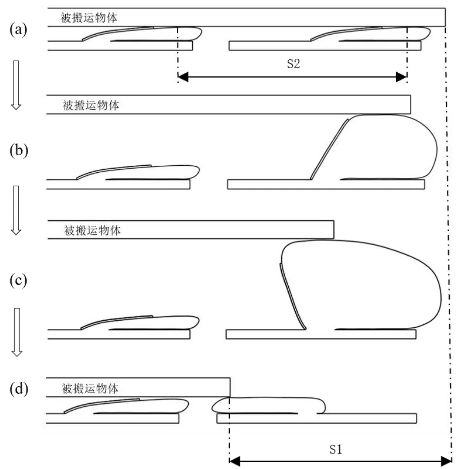
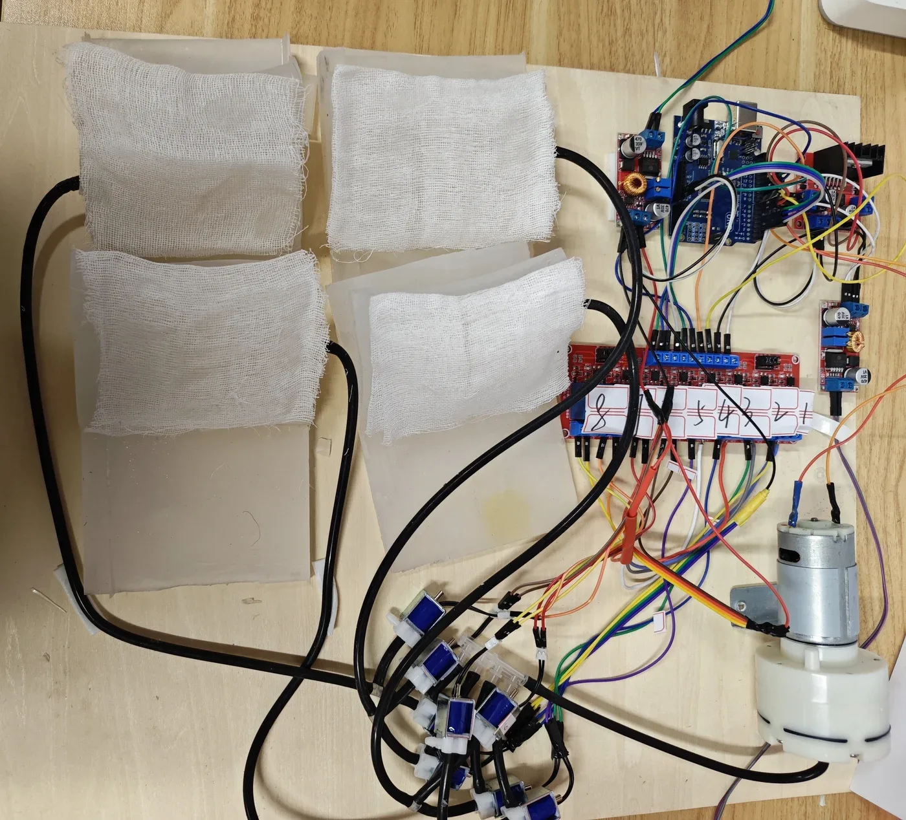
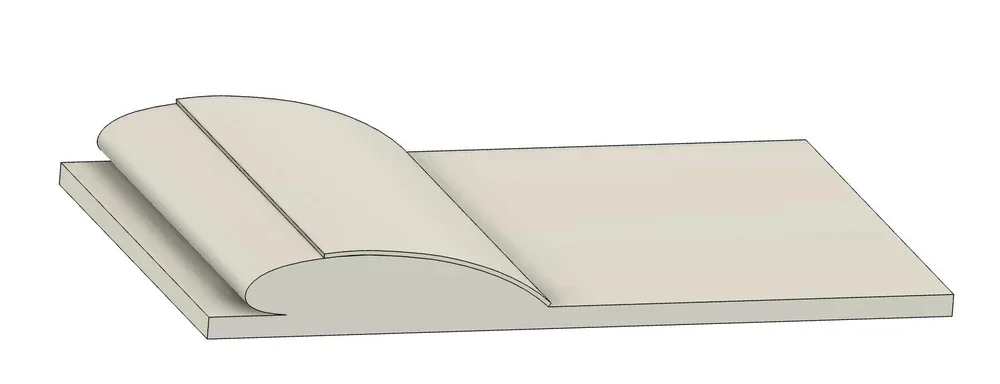
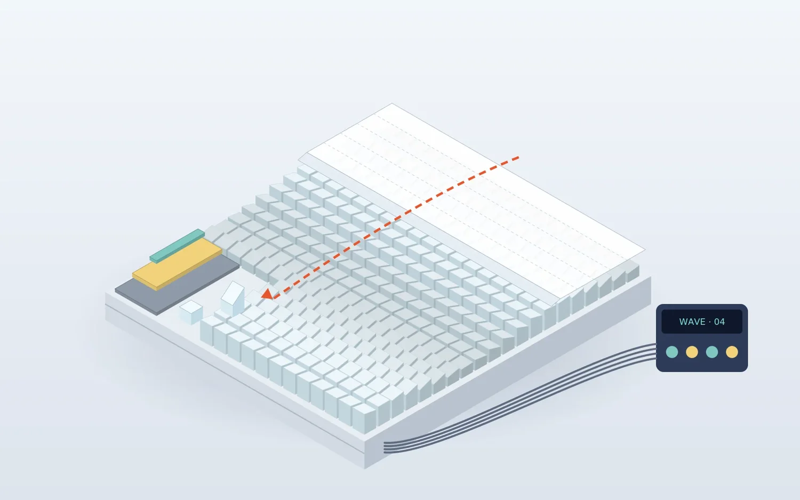
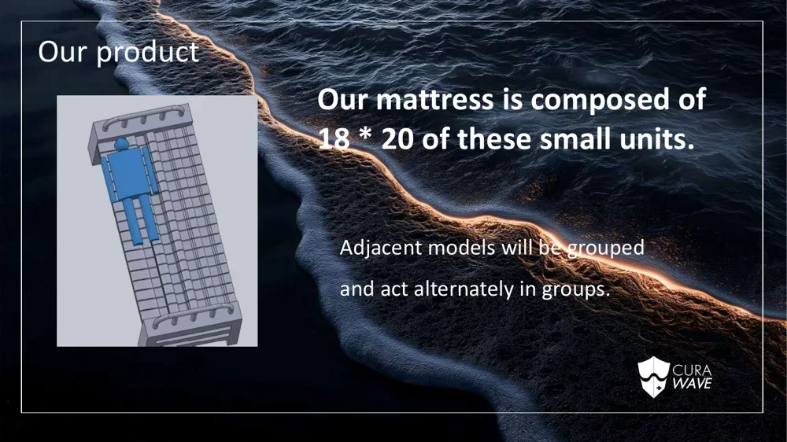

For patients who must be moved between beds after surgery.

For whom
After surgery, a patient who cannot move must still be moved: from trolley to bed, from bed to scanner. Today that means several people lifting at once.
I spent weeks on an injured leg and learned how helpless it feels to be shifted by other people’s hands. Curawave is for patients in that position, and for the nurses who lift them.
The problem
Every transfer is a risk. Among 1,200 post-operative patients in one study, 15% had complications related to being moved. Lifting also injures the people who do it.
What we built
Curawave moves a patient the way a wave moves a boat. The mattress is made of soft units that tilt left and right in alternating groups, so a sideways wave carries the patient onto the next bed.
Alternating groups inflate and tilt in turn; the patient (the bar) is passed along the top.
Each unit has a hollow silicone inflation layer, a non-stretch cotton confining layer and a silicone base. Because the confining layer stretches less, the unit tilts sideways when inflated.




Where it stands
We built three prototype generations, up to a 1 × 4 array with each group on its own solenoid valve and an Arduino timing the wave. The full design is 18 × 20 units. Curawave was our Conrad Challenge entry and now continues inside Lingtong as our second product line.

